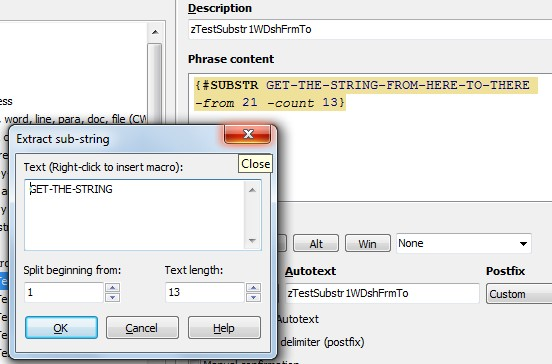
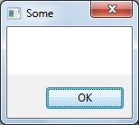

[BACK] (XBN-PhraseExpress is released under the LPGL 2.1)
This document describes generic (unrelated to XBN-PhraseExpress) PhraseExpress problems you may encounter, with workarounds when possible.
Contents:
In general, when PhraseExpress behaves in a truly bizarre manner, just restart it. Some examples may include
And NEVER hit the escape-key when you're in the PhraseExpress application.
[top] Problem: When parameter values contain dash-parameter-name[go to solution, testing phrases]
{#SUBSTR GET-THE-STRING-FROM-HERE-TO-THERE -from 21 -count 13}
Output: nothing
The reason is the string-being-searched contains
"-FROM"
and
"-TO"
which is confusing PhraseExpress: Which is the "real" "-from" parameter? (As far as "-to", which is not a legal parameter, your guess is as good as mine.)

As noted below, this is a problem with all PhraseExpress functions that have dash-parameters.
To emphasize the issue, here is the output from some variations:
{#SUBSTR GET-THE-STRING~FROM-HERE-TO-THERE -from 21 -count 13}
Output: nothing
{#SUBSTR GET-THE-STRING-FROM-HERE~TO-THERE -from 21 -count 13}
{#SUBSTR GET-THE-STRING{#asc 45}FROM-HERE~TO-THERE -from 21 -count 13}
{#SUBSTR {#insert zTestStrDshFrmTldTo} -from 21 -count 13}
Where "zTestStrDshFrmTldTo" is equal to
GET-THE-STRING-FROM-HERE~TO-THERE
Output: "GET-THE-STRIN"
[BACK] The solutionThe solution--which is impossible--is to never have an input string that, when using "SUBSTRING", contains "-from" or "-to".
{#SUBSTR GET-THE-STRING~FROM-HERE~TO-THERE -from 21 -count 13}
Output: "HERE~TO-THERE"
This is a problem with all PhraseExpress functions that have parameters (COND, REPLACE, LOOP, INPUT, etc.). For example:
{#MSGBOX -head Some-text -text Some-more-text}

Since you are largely in control of the text in "MSGBOX"-s and "BALLOON"-s, it is strongly recommended that you use tildes ('~') in lieu of dashes.
The ability to escape strings would solve this problem:
[BACK] Testing phraseszTestSubstr1WDshFrmTo
{#SUBSTR GET-THE-STRING-FROM-HERE-TO-THERE -from 21 -count 13}
zTestSubstr2WTldFrmDshTo
{#SUBSTR GET-THE-STRING~FROM-HERE-TO-THERE -from 21 -count 13}
zTestSubstr3WDshFrmTldTo
{#SUBSTR GET-THE-STRING-FROM-HERE~TO-THERE -from 21 -count 13}
zTestSubstr4WTldFrmTo
{#SUBSTR GET-THE-STRING~FROM-HERE~TO-THERE -from 21 -count 13}
zTestSubstr5WAscDshFrmTldTo
{#SUBSTR GET-THE-STRING{#asc 45}FROM-HERE~TO-THERE -from 21 -count 13}
zTestSubstr6WDshFrmTldToWPhrsCl
{#SUBSTR {#insert zTestStrDshFrmTldTo} -from 21 -count 13}
zzTestStrDshFrmTldTo
GET-THE-STRING-FROM-HERE~TO-THERE
Intermittently, when PhraseExpress "directly" types text into a dialog's textbox, it instead prints that text into the document-proper--or in the case of modal dialogs, such as "Open File(s)", it causes DINGs.
For example, while this works most of the time (assuming "xxx" exists):
findnextx
{#insert zFcsTPFindDlgOpen}
xxx
{#insert zFindBtnNext}
{#insert zFindDlgClose}
This works all of the time:
findnextxv
{#insert zFcsTPFindDlgOpen}
{#SETPHRASE -description zvFIND_WHAT -content
xxx
-autotext zvFIND_WHAT -folder ctvv_folder}
{#insert zvFIND_WHAT}
{#insert zFindBtnNext}
{#insert zFindDlgClose}
This is called "set-printing": Setting and then immediately printing (and usually, discarding) a variable.
zFIND_WHAT" set-print can be easily created with "fwhatp".zvRPLC_WITH" set-print can be created with "rwithp"stpr" utility, when called from immediately following a SETPHRASE, creates the "print" call for that setphrase.An alternative to set-printing is simply to call a phrase containing the find-text. Such as:
findnextxp
{#insert zFcsTPFindDlgOpen}
{#insert zQxxxQ}
{#insert zFindBtnNext}
{#insert zFindDlgClose}
zQxxxQ
xxx
While this makes the find code more readable, it also massively increases the number of potential single-use-only (and trivial static-string-only) phrases.
In situations, for example, when making a long series of replacements, the various set-prints would make the code unreadable. In this case, declaring each search-term in a separate phrase-call may be desirable. Another situation where set-prints may be undesirable, is when (for example) the search-term contains logic (that is, phrase-calls), or is particularly long.
In addition, when curlys must be typed into a dialog textbox (which is common when searching for PhraseExpress code!) the curlys must be doubly-escaped. This quickly becomes unreadable, and is another reason to use a phrase-call instead. It is also impossible to put a literal SETPHRASE inside an actual SETPHRASE...trust me.
Some problems happen only some of the time, but they do consistently occur:
{#SETCLIPBOARD there}hello {#INSERTCLIPBOARD}.
hello hello
Caps Lock" key twice. Note that "Esc" cancels the process, and "Space" dismisses any currently-displayed dialog box.Esc" key--as long as the PhraseExpress application is not both open and focused on.{#SPACE} dismisses a non-Pex dialogWhen a modal non-PhraseExpress dialog is open, and it is dismissed unexpectedly, check to see that a call to "{#SPACE}" is not being typed during that time. For example:
{#insert zTPFindDlgOpen}text definitely not in the document{#insert zFindBtnNext}some{#SPACE}more text{#insert zFindBtnNext}{#insert zFindDlgClose}
When clicking the find-next button the first time, it causes a modal "cannot-find" dialog to appear. The call to "{#SPACE}" in the next search term dismisses that dialog, resulting in only "more text" being found.
This problem only occurs when using "{#SPACE}". Neither
some more text
nor
some{#asc 32}more text
cause the problem.
SETPHRASE and SETCLIPBOARD[jump to solution, curly-problem]
Attempting
{#SETCLIPBOARD {#ENTER}x{#TAB}}
results in a newline and tab being printed while the phrase is executing. The clipboard is set only to 'x'.
For example:
Hello {#SETCLIPBOARD {#ENTER}Kermit{#TAB}}there, {#INSERTCLIPBOARD}.
results in
Hello there, Kermit.
The problem is similar when using SETPHARSE:
Hello {#SETPHRASE -description zvNAME -content {#ENTER}Kermit{#TAB} -autotext zvNAME -folder ctvv_folder}there, {#insert zvNAME}.
The result:
Hello there, Kermit.
[BACK] The solutionDoubly-escaping the enter and tab achieve what you want:
Hello {#SETPHRASE -description zvNAME -content \\\\\\{#ENTER\\\\\\}Kermit\\\\\\{#TAB\\\\\\} -autotext zvNAME -folder ctvv_folder}there, {#insert zvNAME}.
The result:
Hello there,
Kermit.
[BACK] Curly's as well must be escaped when using SETPHRASE and SETCLIPBOARDSetting stray curlys ('{' and '}') into SETPHRASE and SETCLIPBOARD will likely cause incorrect interpretation, because PhraseExpress will not know where one phrase ends and another begins--such as the SETPHRASE itself!
Unfortunately, doubly-escaping does not solve the problem:
Hello {#SETCLIPBOARD \\\\\\{Kermit\\\\\\}}there, {#INSERTCLIPBOARD}.
Results in:
Hello there, \\\\\\{Kermit}.
This is simply a problem to be avoided.